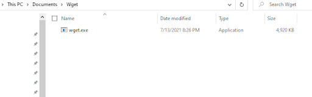
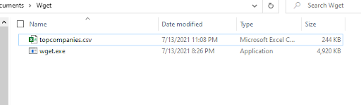

Intro
How do you use the programs and what are they for?
WGET is a simple command used on the terminal to collect files from the internet, mainly integrated within GNU/Linux operating systems. It works by making requests to the internet and pulls back requested items to be downloaded. This could be anything from a file, picture, or spreadsheet. CURL works similarly to the WGET in pulling data off the internet. However, cURL is powered by the libcurl library and allows for upload/file transfers. WGET uses more common protocols such as HTTP, HTTPS, FTP and FTPS. While CURL allows for a much broader protocol coverage across the board. Another key difference is that due to the set focus of downloading for WGET, it comes with features to allow for a much easier download experience, such as resuming incomplete files, persistent connections, and NLS-based language support.
When would you use one or the other to download a CSV file?
Both programs can be utilized in different ways depending on the use-case of the CSV file. For example if the CSV file was used to track a company’s shipping address locations, a single file could contain thousands upon thousands of entries. If this file was needed to be shared to a server URL, you would be using CURL to upload and download different iterations of the file. It would allow you to upload and store your backup and retrieve it from the console with a script for easier data entry. If the file was already uploaded to the cloud or there multiple CSV files needed to be downloaded, WGET would be able to accommodate better due to its resume and multidownload features.
Breakdown of the flag options
| -i | Includes the header info |
| -O | Downloads a file |
| -qc | Quit download with resuming if failed |
| -qcO | Same as -qc but with specified download location |
| -U | Download url using an agent provided |
| -p<dir><dir> | Downloads file from url to directory |
| -c | Continue aborted downloads |
| -u | Connect to server using username and password |
| -i | Include protocol response headers in the output |
| -o | Output to a file named as the remote file |
| -O | Output to a file named as the remote file |
| -T | Transfer local file to destination |
| -x | Get file from a speficied proxy |
| -r 0-99 | Get the first 100 bytes |
Windows Tutorial
Wget
Wget does not come included with windows so it needs to be downloaded.
Step 1:
Download the latest version based on your OS from https://eternallybored.org/misc/wget/
Step 2:
Move the exe file to any desirable folder
Step 3:
Shift right click anywhere in the folder and click "Open powershell windows here". It may be command prompt depending on your setup
Step 4:
Now you can run any Wget commands to download file, I am using the -O flag for outpu
Wget can also be added to PATH under windows environment variable which will allow you to run these commands from anywhere in the computer

Linux
curl -O "https://testsite.com/bigdata.csv